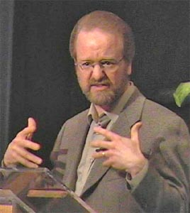

| Притча O Расточительном Сыне |
| От Луки 15:
11 Еще сказал: у некоторого человека было два сына; 12 и сказал младший из них отцу: отче! дай мне следующую [мне] часть имения. И [отец] разделил им имение. 13 По прошествии немногих дней младший сын, собрав все, пошел в дальнюю сторону и там расточил имение свое, живя распутно. 14 Когда же он прожил все, настал великий голод в той стране, и он начал нуждаться; 15 и пошел, пристал к одному из жителей страны той, а тот послал его на поля свои пасти свиней; 16 и он рад был наполнить чрево свое рожками, которые ели свиньи, но никто не давал ему. 17 Придя же в себя, сказал: сколько наемников у отца моего избыточествуют хлебом, а я умираю от голода; 18 встану, пойду к отцу моему и скажу ему: отче! я согрешил против неба и пред тобою 19 и уже недостоин называться сыном твоим; прими меня в число наемников твоих. 20 Встал и пошел к отцу своему. И когда он был еще далеко, увидел его отец его и сжалился; и, побежав, пал ему на шею и целовал его. 21 Сын же сказал ему: отче! я согрешил против неба и пред тобою и уже недостоин называться сыном твоим. 22 А отец сказал рабам своим: принесите лучшую одежду и оденьте его, и дайте перстень на руку его и обувь на ноги; 23 и приведите откормленного теленка, и заколите; станем есть и веселиться! 24 ибо этот сын мой был мертв и ожил, пропадал и нашелся. И начали веселиться. 25 Старший же сын его был на поле; и возвращаясь, когда приблизился к дому, услышал пение и ликование; 26 и, призвав одного из слуг, спросил: что это такое? 27 Он сказал ему: брат твой пришел, и отец твой заколол откормленного теленка, потому что принял его здоровым. 28 Он осердился и не хотел войти. Отец же его, выйдя, звал его. 29 Но он сказал в ответ отцу: вот, я столько лет служу тебе и никогда не преступал приказания твоего, но ты никогда не дал мне и козленка, чтобы мне повеселиться с друзьями моими; 30 а когда этот сын твой, расточивший имение свое с блудницами, пришел, ты заколол для него откормленного теленка. 31 Он же сказал ему: сын мой! ты всегда со мною, и все мое твое, 32 а о том надобно было радоваться и веселиться, что брат твой сей был мертв и ожил, пропадал и нашелся. |
|  |
Когда в 70-ых я был в Библейском Колледже, я был частью мужского квартета, который путешествовал по церквям и представлял нашу школу. Однажды с деканом я собирал рекламные материалы, чтобы оставить их в церкви, куда мы отправлялись в выходные, и он, видя, что я взял целую груду брошюр, сказал "Ты можешь положить часть назад. Мы не хотим быть расточительными". Расточительными? Единственное место, в котором я встречал это слово, было в рассказанной Иисусом притче, которая стала известна как притча o расточительном сыне. Сын взял свою долю отцовского состояния и потратил его в разгульной жизни, а затем приполз назад к отцу, когда разорился. Думал ли декан, что я побегу с этими брошюрами и буду бездумно разбрасывать их на улице? Я спросил его, что значит расточительный? "Не бережливый". Ага, слишком много брошюр означает, что многие будут потрачены впустую. Так, молодой человек потратил впустую свою часть отцовского состояния. Вот почему притча называется Притча O Расточительном Сыне. |
|
Притчи это истории с неожиданностями, которые заставляют нас задуматься. Иисус рассказал эту притчу смешанной толпе. Там были Фарисеи, и учителя еврейского закона - религиозные лидеры тех времен. Налоговые инспекторы были евреями, которые выбрали работу на ненавистную языческую Римскую Империю и облагали налогом своих соплеменников. Многие из них были лживы и брали налогов больше положенного, оставляя разницу себе. Грешники - слово, которое религиозные люди обычно применяли к проституткам и другим людям, которые нарушили еврейский закон в том или ином виде. Эти люди страстно хотели слушать Иисуса, и он всегда приветствовал их открыто, когда они приходили. Фарисеи и учителя закона думали, что это общение было ужасным, и более того, Иисус дошел до крайности плохого религиозного вкуса - он даже ел с ними, что было признаком примирения и приобщения. Религиозные лидеры избегали подобных людей и подумать о том, чтобы сидеть с ними и даже есть с ними было выше их воображения. Этого не могло случиться. Итак, Иисус рассказал три притчи: о потерянной овце, о потерянной монете, и ту, что мы рассмотрим, притчу о расточительном сыне. У человека было два сына. Однажды, младший сын говорит, "Отец, дайте мне мою долю наследства". Он получил бы долю, после смерти отца, но он не мог ждать, пока отец умрет, и хотел получить это поскорее. Мы могли бы назвать это Притчей об ужасно нетерпеливом сыне. Его отец сказал "Хорошо" и передал младшему сыну его часть наследства. Плохое решение! О чем этот отец думал?! Мы предвидим, к чему это приведет! Дать ему наследство одной большой суммой было бы глупостью. Возможно, мы должны переименовать это в Притчу о расточительном или глупом отце! Несколько дней спустя, младший сын собрал все его наследство и отправился в страну далекую от отца и его дома. Вы удивлены?! Нет, мы могли это предвидеть! Он отбыл, возможно, в Антиохию или Коринф или возможно в Рим, да в Риме было большое искушение, и это было хорошо для него. Он начал сорить деньгами напоказ, бросился во все греховное, что можно купить за деньги. Я повторяю что это - Притча о Расточительном Сыне. Этот сын вызывает наш гнев. Столь эгоцентричный и непочтительный к отцу. Возможно единственное милосердие, которое он проявил к отцу, было в том, что он уехал далеко, чтобы жить такой жизнью. Хотя мы считаем отца ответственным за его плохое решение, мы хотим, чтобы сын получил то, что он заслуживает. Мы не можем дождаться его падения. Нам не придется долго ждать; деньги могут дать вам ограниченное количество вещей. И он имел ограниченное количество денег. В коне концов они закончилось. Кроме этого сильный голод охватил эту страну, возможно от засухи или какой-то болезни, и он начал голодать. В отчаянии, он пошел к местному фермеру язычнику, разводившему свиней, который послал его кормить этих свиней. Даже свиная еда начала выглядеть для него вкусной, потому что ни фермер, ни кто-либо еще не дал бы ему никакой еды. Фермер должен был кормить его, но не делал этого. Это было неправильно, но это случилось. Поглядите на него! Добро пожаловать в реальный мир! Реальный мир - жестокий учитель, и он скоро приходит в себя. "Подождите! Наемные работники в доме моего отца имеют больше еды, чем они могут съесть, а я здесь умираю от голода. Я собираюсь пойти домой к моему отцу и сказать: Отец, я согрешил против Бога, я согрешил перед тобой; я больше не заслуживаю называться твоим сыном. Найми меня как работника" Нанятые работники имели более тяжкий жребий, чем рабы, потому что их работа была более неопределенной. Рабы были собственностью и были уверенны в получении еды и убежища, но наемные работники, могли быть уволены. Он собирался предложить самые незначительные, самые сомнительные отношения с человеком, который был его отцом. Он планирует каждое слово тщательно, потому что его жизнь зависит от этого. Его признание должно изменить твердое сердцем ожесточенного отца. Мы можем сказать "Ха! Он приходит домой только потому, что он хочет есть! Если бы он имел неограниченное количество денег, он никогда бы не вернулся! Какое раскаяние! Он все еще пытается использовать своего отца!" Мы должны назвать это Притчей о Мошеннике. Возможно. Возможно, нет. Он оставил свиней и начал путешествие к дому. Он был еще очень далеко от фермы, только пятнышко на расстоянии, когда отец увидел его. Это почти похоже на то, что он ждал его. Возможно, поэтому некоторые называют это Притчей об Ожидающем Отце. Вместо того чтобы наблюдать за последней частью поездки сына домой, отец, забыв о достоинстве и своем ожидании, бежит навстречу и скоро хватает его в крепкие объятия и целует его. Сын начинает свою запланированную речь. "Отец, я грешил против Бога, я грешил перед Вами, я не заслуживаю больше назваться вашим сыном" Он так и не получал шанса закончить свое признание. Его отец уже давал распоряжения слугам "Быстрей! Принесите одежду, хранимую для почитаемых гостей. Наденьте семейное кольцо на его палец и сандалии на его ноги. Только рабы ходили босиком вокруг. Потом возьмите жирного отборного теленка! Мы собираемся есть самый лучший шашлык! Мой сын здесь, он был мертв, но теперь он жив! Был потерян и теперь найден!" И они начали большое празднество, наполненное музыкой и танцами. Теперь где-то в этом месте мы прощаем отцу его прошлые плохие решения также как и сына за его глупости. Мы рады, что он вернулся назад. И мы думаем "Какая замечательная короткая история! Не удивительно, что ее так любят многие!" Поэтому некоторые предлагают назвать это Притчей о Замечательном Отце. Но это еще не конец. Иисус - рассказчик истории, не отпустит нас так легко. Был еще старший сын. Как и его брат, он отсутствовал, работая в Поле. Он тоже возвращался домой, вероятно, для хорошей трапезы, точно так же как его брат. Когда он оказался в пределах слышимости от дома, он услышал празднество. Он позвал слугу, "Что происходит в доме?" "Ваш брат вернулся и ваш отец так счастлив, что устроил празднество" |
Старший брат, вероятно, после того, как начальный удар смягчился, наполнился гневом. Он отказывается войти в дом. Вышел отец. "Заходи сын, пожалуйста. Твой брат дома. Пожалуйста" Нам становится жалко отца. Старший брат выпалил "Смотрите! Я честно батрачил на Вас все эти годы. Я никогда не ослушался Вашего слова, соблюдал все правила, делал все, что Вы просили. Никогда за все это время Вы не дали мне и одного паршивого козленка, чтобы я и мои друзья могли повеселиться. Но только ваш сын приходит домой, после того, как промотал ваши деньги, кто знает в скольких борделях, Вы сбиваетесь с ног, чтобы устроить банкет с нашей лучшей говядиной. Я не понимаю Вас!" Хорошо, бордели могли быть его выдумкой, но его гнев справедлив. И кто может обвинить его? Я не могу. Я был бы тоже сердит. Знаете почему? Я был хорошим ребенком. Я был послушен. Спросите моих родителей. Я никогда не переживал бунтарский период как подросток. Я пережил это возраст спокойно. Я был добросовестным. Я был хорошим сыном. Я был как этот старший сын. Так что я понимаю его. Теперь, если мы верим этому сыну, а мы не имеем никакой причины не верить, отец снова делает глупость. Он никогда не проявил никакой благодарности за прилежную работу своего сына? Этот сын - мечта! Родители отдали бы правую руку за такого ребенка. Если Вы могли бы выбрать между непослушными детьми, которые причиняют Вам огромную боль и детьми, которые трудолюбивы и послушны, кого бы Вы выбрали? И Вы, вероятно, были бы лучше, чем этот отец, который не мог даже показать свою благодарность и немного признательности. Мы подозреваем, что отец заслуживает этого упрека от старшего сына. Этот сын, будто жил в далекой стране, хотя находился под крышей своего отца! Это плохой способ управлять семейством, обращать все внимание на непослушного и не замечать преданного. Все мы знаем это! Может это Притча о негодном Отце? Или возможно мы должны назвать это Притчей о Потерянных Сыновьях, потому что они оба переживают отчуждение от своего отца в разных частях этой истории? Или возможно это - Притча о Разрушении Семьи? Что отец может сказать в ответ на это? Сын, он начинает, ты - всегда здесь со мной и все, что я имею, твое. Спасибо что он хоть помнит, что "Ты - всегда здесь" а не воспринимает это как само собой разумеющиеся. "Так что ты мог в любое время, когда захочешь, получить все, ты хотел взять любого из моих козлов или теленка для празднества. Ты мог, но не сделал этого". Возможно это - притча об отце, который не понимает! Он продолжает: "Но мы должны отпраздновать это большое событие - возвращения твоего брата. Он был мертв, но теперь он жив! Был Потерян и теперь найден! " Смотрите, это - те же слова, которые отец сказал слугам. Он смотрит на своего младшего непослушного сына, который был бы доволен быть слугой, как на истинного сына, и он смотрит на своего истинного сына как на одного из своих слуг. Притча об отце, все внимание которого обращено на недавно вернувшегося непослушного сына вместо сына, который был прямо под самым его носом и делал то, что должен был делать все время. Это трудная история. Есть в ней места, где мы не понимаем любого из этих трех характеров! Мы любим эту историю, когда мы - расточительный ребенок, тот, кто сломал свою жизнь. Но мы начинаем чувствовать себя неловко, если мы являемся хорошими послушными и трудолюбивыми, а непутевый член семейства получает награду! Удивительная доброта иногда воспринимается как возмутительная доброта. Когда грешники приползают назад к Богу, после того как они согрешили, и он принимает их с великой радостью и празднует это так, как он кажется никогда не делал для нас, и он хочет чтобы мы радовались так же, как он, это трудно. И все, что он может сказать в ответ, звучит неловко "Я не могу ничего сделать. Я так счастлив, что твой брат вернулся!" Грустная история всплыла в последние несколько дней. Тэд Хаггард, который был президентом Национальной Ассоциации Евангелистов США - положение очень видное и влиятельное для 33 миллионов евангелистских американских христиан и пастор огромной церкви в Колорадо-Спрингс, был только что освобожден от этих должностей. Обсуждаются обвинения в покупке наркотиков и найме мужчин проституток, и он признал частично свою вину, хотя все еще не ясно, что случилось. Он признал свои грехи и попросил прощения. Он - расточительный сын. Есть много старших сыновей, которые наблюдают это возвращение и задаются вопросом, что будет дальше. Полностью преданные последователи Иисуса, которые работали долго и усердно для Бога, те, кто был предан и послушен, служил жертвенно, без награды или признания. Есть тысячи и тысячи таких на каждого Тэда Хаггарда. Они принесли людям веру во Христа. Многие могут оставить веру из-за Тэда Хаггарда. У них хорошая репутация в своих кругах. Тэд Хаггард обсуждается в мировом прессе. Они приносят славу Богу, а не причиняют боль. Они облегчают работу церкви. Тэд Хаггард только затруднил работу для нас всех. Трудолюбивые люди создают церковь. Расточители разрушают ее. Но Бог так рад его возвращению. Действительно ли Бог столь же рад тому, что я сделал для него на этой неделе? На прошлой неделе? За неделю перед этим? В течение прошлых трех лет? Действительно ли Бог радуется более возвращению грешника, чем служению всей моей жизни? Я думаю, что через несколько лет Тэд может вернуться к общественному служению в той или иной форме, иметь многочисленные выступления и написать книгу о своем опыте, которая будет хорошо принята, он будет наслаждаться замечательным барбекю из говядины, какой только пожелает, пока не умрет в зрелой старости, наслаждаясь добротой небесного Отца. Это случается снова и снова, когда расточители, кто допустил худшие ошибки, возвращаются и наслаждаются удивительной добротой Бога, рассказывая поучительные истории. И остальные из нас, кто продолжает оставаться верными, какими мы всегда были, без всяких аплодисментов, приглашены Иисусом наслаждаться музыкой и танцами и говядиной на празднике в честь кого - то, кто потратил впустую свою жизнь, но возвратился. В этом месте истории, Иисус приходит ко мне и говорит "Дейв, я праздную банкет в честь Тэда, потому что он вернулся. Приди, и раздели мою радость" И я стою перед домом Отца и думаю, войти или нет. И думаю вот что: в конце этой истории, кто же заблудший? Единственный человек, который заблудился в этой истории это ответственный человек, старший сын. Я не хочу заблудиться. Было много людей, которые покинули эту церковь недавно, лидеры, которые собрали все свои деньги и способности и вклады и оказались в другом церковном доме, вкушая Божью благодать. Они радуются новым друзьями, новым возможностям, новым переживаниям, новому началу. Но мы стояли за продолжением служения здесь в Northview Community Church. Иногда наша верность может стать завистливой и обиженной. Иисус призывает нас, чтобы праздновать его доброту к ним и возрадоваться им, также как он радуется им. Рассказывая эту притчу, Иисус фактически приглашает Фарисеев, и учителей закона на его следующее собрание со всеми грешниками, которых религиозные лидеры презирали. Сборщики налогов будут там и грешники и проститутки и растратчики, и язычники, разводящие свиней и безумные отцы. "Придите и будьте счастливы с моим Отцом, который радуется тому, что вы дома. Будьте также счастливы, как Господь". В моем пересказе этой притчи, Иисус вручил приглашение каждому из вас сегодня. Придете ли вы? Чудо доброты в том, что когда мы приходим отпраздновать Божью доброту к младшим братьям, мы тоже оказываемся почетными гостями. Возможно, мы должны назвать это Притчей о Приглашении Отца Небесного для всех нас. |
| Dave Bielbe 12 ноября 2006 |